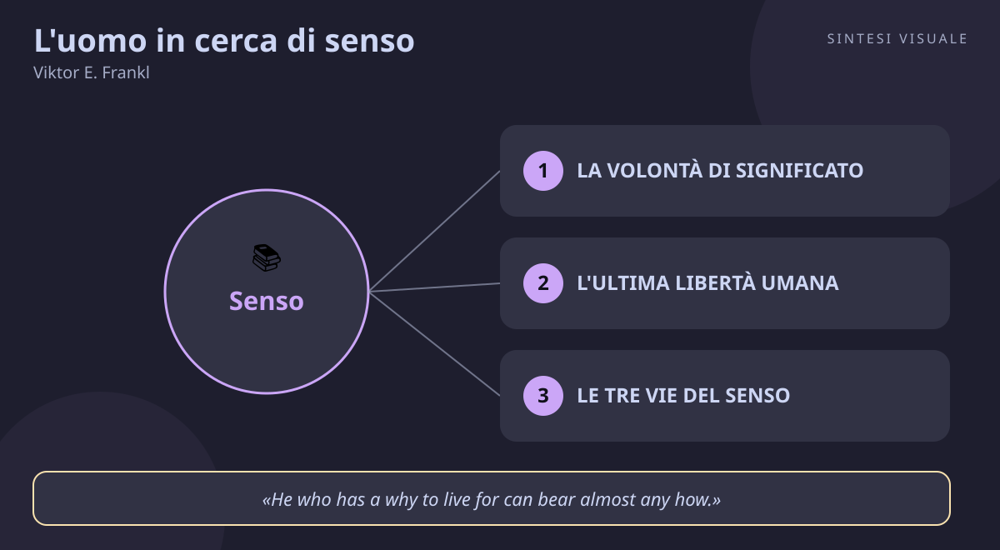

Home / Libri / L'uomo in cerca di senso

L'uomo in cerca di senso
Viktor E. Frankl · Successo e senso
«L'uomo in cerca di senso»
- Volontà di senso
- Ultima libertà
- Tre vie
- Ottimismo tragico
🧭Introduzione
Viktor Frankl non scrisse questo libro a tavolino: lo visse prima nei lager nazisti — Auschwitz, Kaufering, Türkheim — dove perse quasi tutta la famiglia, e lo dettò in nove giorni nel 1946, appena tornato a Vienna. Psichiatra già noto prima della guerra per un centro di prevenzione del suicidio, trasformò l'esperienza più estrema in una scuola di psicologia: la logoterapia, la terapia del senso. Il libro è entrato nel 1991 nella lista dei dieci più influenti d'America secondo la Library of Congress e ha superato i 16 milioni di copie in oltre 50 lingue.
Perché conta oggi: viviamo in società ricche e ansiose, dove si può avere tutto e sentirsi vuoti. Frankl sposta la domanda che ci tormenta — "come posso essere felice e avere successo?" — su un terreno più solido: il successo e la felicità arrivano da soli quando dedichi la vita a qualcosa più grande di te.
A chi è utile: a chi attraversa un periodo buio (lutti, malattie, crisi di lavoro o di coppia), a chi "ha tutto ma sente che manca qualcosa", a manager, educatori, genitori e professionisti d'aiuto — e a chiunque voglia un'idea di successo che regga anche nella sofferenza.
📘Riassunto
La scintilla centrale: l'uomo non è mosso in primo luogo dal piacere (Freud) o dal potere (Adler), ma dalla volontà di significato; anche quando tutto gli viene tolto, resta una libertà che nessuno può togliergli: scegliere il proprio atteggiamento.
La struttura logica procede in due grandi atti:
- Esperienze in un campo di concentramento — fenomenologia della vita nel lager: lo shock dell'arrivo, l'apatia come difesa, la lotta per restare interiormente umani. Frankl racconta chi sopravviveva meglio non per forza fisica ma per un "perché" (una persona amata, un'opera da finire, un compito interiore) — e chi si lasciava andare quando il perché crollava.
- La logoterapia in sintesi — l'esposizione sistematica del metodo: la volontà di significato come motivazione primaria, il vuoto esistenziale come malattia del nostro tempo, le tre vie per scoprire il senso (creare, amare, assumere un atteggiamento dignitoso di fronte al dolore inevitabile) e tecniche come l'intenzione paradossa.
Il punto di svolta: la pagina in cui Frankl racconta di essersi scoperto, scavando sotto il sole gelido, a dialogare interiormente con l'immagine dell'amata moglie — e di capire che l'amore resta l'ultima salvezza anche quando non resta più nulla. Da lì il lettore capisce che il libro non parla di sopravvivere ai lager, ma di come vivere ovunque.
L'eredità oggi: la logoterapia ha istituti in tutto il mondo; il "vuoto esistenziale" di Frankl è diventato la diagnosi culturale di burnout, depressioni del benessere e crisi di mezza età; la psicologia positiva (Seligman) e gli studi su resilienza e scopo riprendono direttamente le sue intuizioni.
💡Concetti chiave
- La volontà di significato: il motore primo dell'uomo non è il piacere né il potere, ma trovare un senso.
- L'ultima libertà umana: non puoi sempre scegliere le circostanze, ma puoi sempre scegliere il tuo atteggiamento.
- Le tre vie del senso: creare un'opera, amare una persona, affrontare con dignità la sofferenza inevitabile.
- Il vuoto esistenziale: senza un perché, il benessere produce noia, conformismo e dipendenze.
- La vita ti interroga, tu rispondi: smetti di chiedere cosa vuoi dalla vita e chiediti cosa la vita chiede a te.
- L'ottimismo tragico: si può dire sì alla vita nonostante dolore, colpa e morte.
📖1. La volontà di significato
- Definizione per Frankl il bisogno fondamentale non è scaricare tensioni o dominare gli altri, ma scoprire un significato da realizzare. Quando questa volontà è frustrata nascono apatia, cinismo e quella che lui chiama frustrazione esistenziale.
- Esempio due colleghi fanno lo stesso lavoro ripetitivo: uno lo vive come "sposto carte", l'altro come "aiuto i pazienti a essere curati prima". Stesse mansioni, fatica diversissima.
- Come applicarlo (a) scrivi in una frase a chi o a cosa serve il tuo lavoro di oggi; (b) quando ti senti svuotato, chiediti "quale senso manca?" invece di "quale piacere manca?"; (c) dedica ogni settimana almeno un'ora a qualcosa che conta per altri, non per te.
- Errore comune credere che basti più piacere (vacanze, acquisti, svaghi) per colmare un vuoto di senso; il piacere senza senso lascia più vuoti di prima.
- Collegamento la psicologia positiva di Martin Seligman (il pilastro "meaning" del modello PERMA); il concetto giapponese di ikigai, la ragione per alzarsi al mattino.
📖2. L'ultima libertà umana
- Definizione tra stimolo e risposta resta sempre uno spazio: la libertà di scegliere come rispondere. Persino nel lager, osserva Frankl, alcuni prigionieri sceglievano di consolare altri e dividere l'ultimo pezzo di pane. Le circostanze possono toglierti tutto, tranne l'atteggiamento con cui le affronti.
- Esempio due pendolari bloccati nello stesso ritardo del treno: uno impreca per un'ora contro tutti, l'altro chiama la famiglia, legge dieci pagine, arriva più sereno. Stesso ritardo, due giornate diverse.
- Come applicarlo (a) quando qualcosa ti fa scattare, fai una pausa di tre respiri e nominala ("questo è un ostacolo, non una condanna"); (b) chiediti "cosa posso ancora scegliere qui?"; (c) la sera annota una situazione in cui hai scelto bene la risposta e una in cui vuoi fare meglio.
- Errore comune confondere accettazione dell'atteggiamento con rassegnazione passiva; Frankl non dice "subisci tutto", dice "scegli come stare dentro ciò che non puoi cambiare, e cambia ciò che puoi".
- Collegamento Epitteto ("non i fatti ci turbano, ma i giudizi sui fatti"); lo spazio tra stimolo e risposta ripreso da Stephen Covey nelle 7 abitudini; la ristrutturazione cognitiva della terapia cognitivo-comportamentale.
📖3. Le tre vie del senso
- Definizione il senso si scopre in tre direzioni: i valori creativi (ciò che fai e dai al mondo), i valori esperienziali (ciò che ricevi: amore, bellezza, natura, arte) e i valori di atteggiamento (come affronti la sofferenza inevitabile quando non puoi più agire né godere).
- Esempio una madre che cresce un figlio (creare), una passeggiata al tramonto con una persona cara dopo una giornata dura (esperienza), un malato che affronta le cure con dignità e umorismo consolando i compagni di reparto (atteggiamento).
- Come applicarlo (a) ogni settimana nutriti da tutte e tre le vie: un'ora di opera (lavoro fatto bene, anche piccolo), un momento di bellezza o amore vissuto con attenzione, un dolore affrontato senza vittimismo; (b) se una via è bloccata (es. lavoro fermo), investi nelle altre due.
- Errore comune cercare il senso in una sola via (solo carriera, solo relazioni) e crollare quando quella si chiude; oppure sprecare energie contro sofferenze evitabili invece di riservare la dignità a quelle inevitabili.
- Collegamento Aristotele e l'eudaimonia (fiorire attraverso virtù e opere); Irvin Yalom in psicoterapia esistenziale sulle quattro preoccupazioni ultime.
📖4. Il vuoto esistenziale
- Definizione quando istinti e tradizioni non guidano più, molti non sanno cosa desiderare e finiscono per volere ciò che vogliono gli altri (conformismo) o ciò che gli altri fanno (totalitarismo del gruppo). I sintomi: noia cronica, apatia, dipendenze, la "nevrosi domenicale" — la depressione che arriva quando il lavoro si ferma e resta il silenzio.
- Esempio il manager che aspetta il weekend come liberazione e poi lo passa svuotato tra divano e telefono, irritabile senza motivo; il neolaureato che ha "fatto tutto giusto" e si sente perso il lunedì dopo la festa di laurea.
- Come applicarlo (a) osserva i tuoi momenti vuoti senza riempirli subito col telefono; (b) sostituisci un'ora di scroll con un compito scelto da te (sport, volontariato, progetto personale); (c) se la domenica sera stai male da mesi, trattalo come un segnale, non come pigrizia: rivedi il tuo perché.
- Errore comune curare il vuoto con più stimoli (shopping, serie, alcol) o con più lavoro; entrambi anestetizzano, nessuno riempie.
- Collegamento Byung-Chul Han sulla società della stanchezza e il burnout; Barry Schwartz sul paradosso della scelta (troppe opzioni, poco senso).
📖5. La vita ti interroga, tu rispondi
- Definizione Frankl rovescia la prospettiva: non chiedere "cosa mi aspetto dalla vita?", ma riconoscere che sei tu l'interrogato — ogni ora la vita ti pone domande (un figlio che ha bisogno di te, un lavoro da finire, un torto da riparare) e la risposta non sono parole, ma azioni giuste.
- Esempio davanti a un cliente furioso non chiederti "come mi libero di questa scocciatura?", ma "cosa chiede a me questa situazione: ascolto, scuse, soluzione?". La giornata cambia registro.
- Come applicarlo (a) al mattino chiediti "cosa mi chiederà oggi la mia giornata?" (persone, compiti, imprevisti); (b) davanti a ogni problema riscrivilo come compito ("cosa devo fare io qui?"); (c) la sera valuta la giornata non da quanto hai ottenuto, ma da come hai risposto.
- Errore comune restare fermi ad aspettare "la vocazione" o "il momento giusto", come se il senso fosse un annuncio in arrivo; per Frankl il senso è concreto e quotidiano, non un'illuminazione.
- Collegamento la responsabilità come risposta in Emmanuel Lévinas e nella psicologia esistenziale; il "chiamato a rispondere" degli stoici (Marco Aurelio: "fai il tuo dovere, il resto non ti riguarda").
📖6. L'ottimismo tragico
- Definizione la maturità è restare capaci di dire sì alla vita nonostante la triade tragica — dolore, colpa, morte — trasformandola: il dolore in testimonianza, la colpa in occasione di cambiare, la morte in stimolo a vivere con più essenzialità perché il tempo è limitato.
- Esempio un artigiano che dopo un fallimento non si racconta solo come vittima, ma usa l'esperienza per ripartire con un'attività più sobria e per avvisare i giovani colleghi degli errori; una persona in lutto che trasforma il ricordo in impegno verso gli altri.
- Come applicarlo (a) davanti a un colpo, scrivi tre colonne: cosa ho perso, cosa posso ancora fare, cosa ho imparato; (b) ripara dove hai sbagliato con un gesto concreto invece di rimuginare; (c) usa la finitezza come alleata: "se avessi un anno solo, cosa terrei?".
- Errore comune l'ottimismo ingenuo ("andrà tutto bene") che crolla al primo colpo, o il suo opposto, il cinismo ("tanto è tutto inutile"); l'ottimismo tragico non nega il male, lo attraversa.
- Collegamento Nassim Taleb e l'antifragilità (ciò che cresce con gli urti); la crescita post-traumatica studiata da Tedeschi e Calhoun; Nietzsche, amatissimo da Frankl: chi ha un perché sopporta quasi ogni come.
💬Citazioni da ricordare
"Everything can be taken from a man but one thing: the last of the human freedoms—to choose one's attitude in any given set of circumstances, to choose one's own way." — la frase più famosa del libro: il potere ti può togliere tutto, ma non il modo in cui scegli di rispondere.
"Don't aim at success. The more you aim at it and make it a target, the more you are going to miss it. For success, like happiness, cannot be pursued; it must ensue, and it only does so as the unintended side effect of one's personal dedication to a cause greater than oneself or as the by-product of one's surrender to a person other than oneself." — il successo non si insegue direttamente: arriva come effetto collaterale della dedizione a qualcosa più grande di te.
"He who has a why to live for can bear almost any how." — citando Nietzsche, Frankl condensa il libro in una riga: chi ha un perché sopporta quasi ogni come.
🌍Esempi di oggi
Tre situazioni dove la lezione di Frankl si vede in azione:
- Il collega che resta umano sotto pressione. In un ufficio travolto da scadenze e tagli, c'è chi sparge veleno e chi sceglie di restare gentile, aiutare i nuovi e non partecipare al gioco del "tutti contro tutti". Stesse circostanze, atteggiamento diverso: è l'ultima libertà in versione open space.
- La domenica sera vuota. Stipendio buono, weekend pieno di svaghi, eppure la domenica sera cala l'inquietudine. Non manca il piacere, manca il perché: è il vuoto esistenziale che bussa, e chiede un compito scelto — non un'altra serie TV.
- Lo studente bocciato che riparte. Dopo un esame fallito, uno studente smette di chiedere "perché proprio a me?" e si chiede "cosa mi chiede questa situazione: metodo diverso, aiuto, più costanza?". Il fallimento diventa maestro: il dolore inevitabile, affrontato bene, diventa testimonianza.
🛠️Azioni pratiche
- Trova il tuo perché quotidiano (10 minuti, una volta): scrivi in una frase a chi serve ciò che fai ogni giorno (famiglia, clienti, studenti, comunità) e rileggila ogni mattina prima di cominciare.
- Allenati nell'ultima libertà (2 minuti al giorno): quando qualcosa ti irrita (traffico, coda, critica), fermati tre respiri e scegli deliberatamente la risposta invece di reagire d'istinto; annota la sera come è andata.
- Nutri le tre vie (un'ora totale): fai una cosa creativa fatta bene, vivi un momento di bellezza o amore con piena attenzione e affronta una piccola difficoltà senza lamentarti — un gesto per ciascuna via del senso.
💎Da portare a casa
Non inseguire il successo: trova un perché per cui valga la pena vivere, e il successo ti seguirà.
💬Approfondimento in chat
Rispondi con il numero (1-6) del concetto che vuoi espandere ulteriormente, oppure con un tema a cui vuoi dedicare il prossimo libro: public speaking, vendite, negoziazione, stress, emozioni, carriera...
📄Quanto è affidabile questa storia
Frankl fu davvero deportato nel 1944 (Theresienstadt, poi Auschwitz, Kaufering e Türkheim) e perse nel lager la moglie, il padre, la madre e il fratello; il libro nacque come testimonianza diretta e come esposizione della logoterapia, già abbozzata prima della guerra. Alcuni storici discutono singoli dettagli della memoria, ma il nucleo biografico e la portata dell'opera — pietra miliare di psichiatria esistenziale e letteratura della Shoah — sono solidamente documentati, a partire dalla voce enciclopedica dedicata al libro e dall'edizione critica con saggio sull'ottimismo tragico.
🖼️In un colpo d’occhio

Tocca l’immagine per ingrandirla.